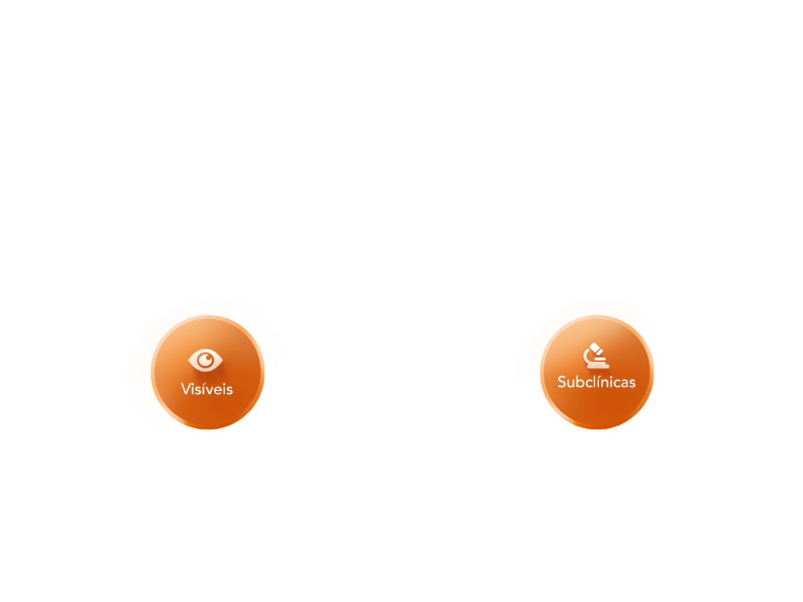
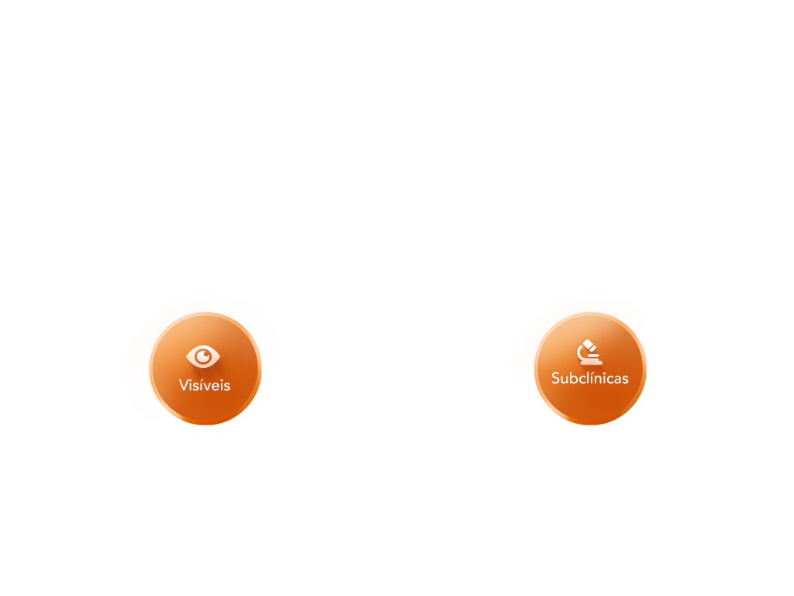
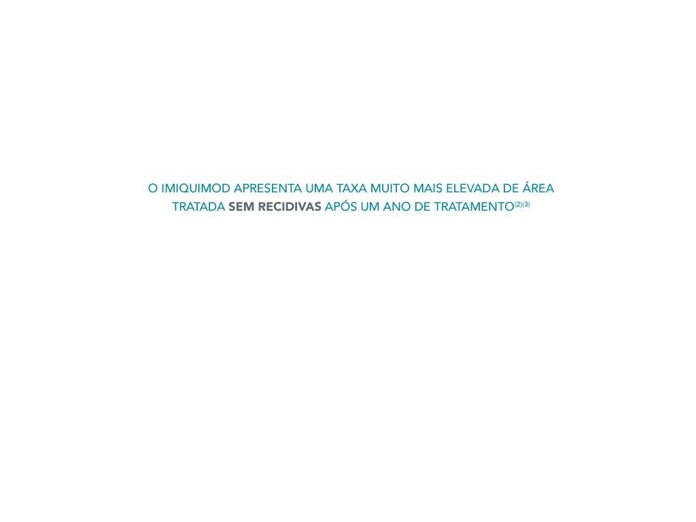
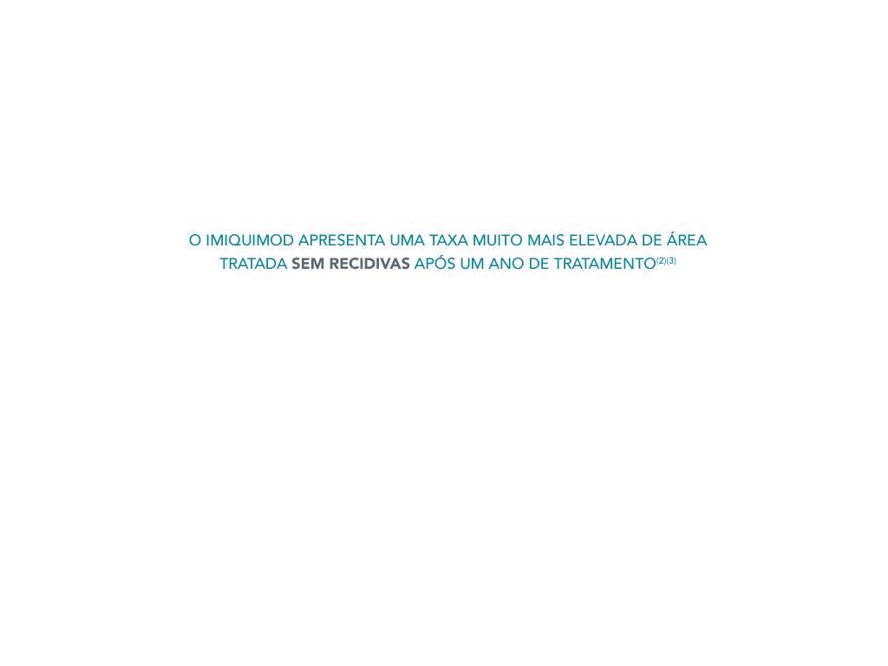

 



 >
>


Informações essenciais compatíveis com o Resumo das Características do Medicamento Imicare 5% creme. Cada saqueta contém 12,5 mg de imiquimod em 250 mg de creme (5%). Indicações terapêuticas: Tratamento tópico de: - verrugas genitais externas e peri-anais (condiloma acuminado) em adultos - pequenos carcinomas superficiais basocelulares (sBCCs) em adultos - queratoses actínicas (QA) não-hiperqueratóticas, não-hipertróficas, clinicamente típicas, no rosto e couro cabeludo, em doentes adultos imunocompetentes quando o tamanho ou o número das lesões limita a eficácia e/ou a aceitabilidade da crioterapia e quando outras opções de tratamento tópico são contra-indicadas ou pouco apropriadas. Posologia e modo de administração: A frequência de aplicação e a duração do tratamento com o Imicare difere consoante a indicação. Verrugas genitais externas em adultos: Imicare deve ser aplicado 3 vezes por semana (por exemplo, à segunda, quarta e sexta-feira) antes da hora normal de deitar, e deverá permanecer na pele durante 6 a 10 horas. Deverá manter-se o tratamento com Imicare até desaparecimento das verrugas perianais ou genitais externas ou por um período máximo de 16 semanas por cada episódio de verrugas. Para a quantidade a aplicar ver 4.2 Modo de administração. Carcinoma superficial basocelular em adultos: Aplicar Imicare durante 6 semanas, 5 vezes por semana (por exemplo, de segunda a sexta-feira), antes da hora normal de deitar, e deixar actuar sobre a pele durante aproximadamente 8 horas. Para a quantidade a aplicar ver 4.2 Modo de administração. Queratose actínica em adultos: O tratamento deve ser iniciado e monitorizado por um médico. O Imicare deve ser aplicado 3 vezes por semana (por exemplo, à segunda, quarta e sexta-feira) durante 4 semanas antes da hora normal de deitar e deixar actuar na pele durante, aproximadamente, 8 horas. Deve ser aplicada uma quantidade suficiente de creme para cobrir a área de tratamento. Após um período de 4 semanas sem tratamento, a eliminação da QA deve ser avaliada. Se alguma lesão persistir, o tratamento deve ser repetido durante mais 4 semanas. A dose máxima recomendada corresponde à dose de uma saqueta. A duração máxima recomendada para o tratamento é de 8 semanas. Deverá ser considerada uma paragem do tratamento se ocorrer uma reacção local inflamatória intensa (ver secção 4.4) ou se for observada infecção no local de tratamento. Neste último caso, deverão ser tomadas as medidas adequadas. Cada período de tratamento não deve exceder as 4 semanas, mesmo com doses omitidas ou períodos de descanso. Se as lesões tratadas mostrarem uma resposta incompleta na observação às 4 a 8 semanas, após o segundo período de tratamento, deve ser utilizada uma terapêutica diferente (ver secção 4.4). Informação aplicável para todas as indicações: Se uma dose for omitida o/a doente deve aplicar o creme logo que se lembrar e, depois, ele/ela deve continuar segundo o esquema habitual. Contudo, o creme não deve ser aplicado mais do que uma vez por dia. População pediátrica: Não é recomendada a utilização em doentes pediátricos. Não existem dados disponíveis sobre a utilização de imiquimod em crianças e adolescentes nas indicações aprovadas. Imicare não deve ser utilizado em crianças com molusco contagioso devido à falta de eficácia nesta indicação (ver secção 5.1). Modo de administração Verrugas genitais externas: Deve-se aplicar uma camada fina de Imicare e friccionar na área das verrugas previamente limpa até que o creme desapareça. Aplique apenas nas áreas afectadas e evite qualquer aplicação a nível das superfícies internas. Imicare deverá ser aplicado antes da hora normal de deitar. Durante o período de tratamento, de 6 a 10 horas, deve evitar-se o duche ou o banho. Após este período é essencial que o Imicare seja retirado com um sabonete suave e água. A aplicação de uma quantidade excessiva de creme ou o contacto prolongado com a pele, pode originar uma reacção grave no local de aplicação (ver secções 4.4, 4.8 e 4.9). Uma saqueta de dose unitária, contém a quantidade suficiente para cobrir uma área de verrugas de 20 cm2. As saquetas não devem ser re-utilizadas após a sua abertura. Deve-se lavar as mãos cuidadosamente antes e depois da aplicação do creme. Os homens não circuncidados que estão a tratar verrugas sob o prepúcio, devem fazer a sua retracção e lavar a área diariamente (ver secção 4.4). Carcinoma superficial basocelular: Antes de aplicar Imicare, o doente deve lavar a área a tratar com água e sabão suave e secar cuidadosamente. Aplicar creme suficiente para cobrir a área de tratamento, incluindo um centímetro de pele em volta do tumor. O creme deve ser espalhado sobre a área de tratamento até ao seu desaparecimento. O creme deve ser aplicado antes da hora normal de deitar e ser conservado na pele durante aproximadamente 8 horas. Durante este período deverá ser evitado qualquer banho ou duche. Após este período, é essencial que Imicare seja retirado com água e sabão suave. As saquetas não devem ser utilizadas de novo após terem sido abertas. Lavar cuidadosamente as mãos antes e depois da aplicação do creme. A resposta do tumor tratado ao Imicare deve ser avaliada 12 semanas após o final do tratamento. Se o tumor tratado exibir uma resposta incompleta, aconselha-se o recurso a outro tratamento diferente (ver secção 4.4). Respeitar um período de repouso de alguns dias (ver secção 4.4) se a reacção cutânea local a Imicare causar desconforto excessivo ao doente ou se for observada qualquer infecção na área de tratamento. Neste último caso, deverão ser empreendidas outras medidas apropriadas. Queratose actínica: Antes de aplicar Imicare, os doentes devem lavar a zona de tratamento com água e um sabão suave e secar cuidadosamente. O creme deve ser aplicado em quantidade suficiente para cobrir a zona de tratamento. Espalhar o creme sobre a zona de tratamento até desaparecer. O creme deve ser aplicado antes da hora normal de deitar e deixar actuar na pele durante, aproximadamente, 8 horas. Durante este período devem ser evitados o duche ou o banho. Após este período, é essencial que Imicare seja eliminado com água e sabão suave. 4.3 Contraindicações Hipersensibilidade à substância activa ou a qualquer dos excipientes mencionados na secção 6.1. 4.8 Efeitos indesejáveis Descrição geral: Verrugas genitais externas: Nos estudos principais, com uma aplicação de 3 vezes por semana, as reacções adversas mais frequentemente descritas como provável ou possivelmente relacionadas com o tratamento com imiquimod foram reacções no local de aplicação na verruga (33,7% dos doentes tratados com imiquimod). Foram igualmente descritas algumas reacções adversas sistémicas, incluindo cefaleias (3,7%), sintomas de tipo gripal (1,1%) e mialgias (1,5%). As reacções adversas descritas pelos 2292 doentes tratados com imiquimod, nos estudos clínicos abertos e controlados por placebo, são apresentadas a seguir. Estes efeitos adversos são considerados como, pelo menos, causalmente relacionados com o tratamento com imiquimod. Carcinoma superficial basocelular: Em ensaios com uma aplicação de 5 vezes por semana, 58% dos doentes experimentaram pelo menos um efeito adverso. Os efeitos adversos mais frequentemente descritos nestes ensaios e que podiam estar provável ou possivelmente relacionados com Imiquimod foram afecções ao nível do local de aplicação, com uma frequência de 28,1%. Algumas reacções adversas sistémicas, incluindo dor nas costas (1,1%) e sintomas de tipo gripal (0,5%) foram igualmente descritas pelos doentes tratados com imiquimod. As reacções adversas descritas pelos 185 doentes tratados com imiquimod, nos estudos clínicos de fase III controlados por placebo, relativamente ao carcinoma superficial basocelular, estão descritas a seguir. Estes efeitos indesejáveis são considerados como, pelo menos, causalmente relacionados com o tratamento com imiquimod. Queratose Actínica: Nos estudos principais com uma posologia de 3 vezes por semana até 2 tratamentos de 4 semanas cada um, 56% dos doentes sob imiquimod notificaram pelo menos um efeito indesejável. Os efeitos indesejáveis mais frequentemente notificados nestes ensaios, considerados provável ou possivelmente relacionados com imiquimod foram reacções no local da aplicação (22% dos doentes tratados com imiquimod). Algumas reacções adversas sistémicas, incluindo mialgia (2%) foram notificadas por doentes tratados com imiquimod. Efeitos indesejáveis de ocorrência frequente: Verrugas genitais externas: Os investigadores dos ensaios clínicos controlados por placebo foram solicitados para avaliar os sinais clínicos determinados pelo protocolo (reacções cutâneas). Esta avaliação dos sinais clínicos determinada pelo protocolo indica que reacções cutâneas locais incluindo eritema (61%), erosão (30%), escoriação/- descamação /crostas (23%) e edema (14%) eram manifestações comuns nestes ensaios clínicos controlados por placebo, com imiquimod aplicado três vezes por semana (ver secção 4.4). As reacções cutâneas locais, tais como eritema, são provavelmente uma extensão dos efeitos farmacológicos do imiquimod. Reacções cutâneas em zona afastada, sobretudo eritema (44%), foram igualmente notificadas nos ensaios controlados por placebo. Estas reacções verificavam- se em locais sem verruga que pudessem ter estado em contacto com imiquimod. A maior parte das reacções cutâneas eram de gravidade ligeira a moderada e resolviam no prazo de duas semanas após interrupção do tratamento. No entanto, em alguns casos, tais reacções foram consideradas graves, exigindo tratamento e/ou causando incapacitação. Em casos muito raros, reacções graves no meato uretral resultaram em disúria, na mulher (ver secção 4.4). Carcinoma superficial basocelular: Os investigadores dos ensaios clínicos controlados por placebo foram solicitados para avaliar os sinais clínicos determinados pelo protocolo (reacções cutâneas). Esta avaliação dos sinais clínicos determinados pelo protocolo indica que o eritema grave (31%), erosões graves (13%) e formação de crostas graves (19%) eram muito comuns nestes ensaios com imiquimod aplicado 5 vezes por semana. As reacções cutâneas locais, tais como eritema, são provavelmente uma extensão do efeito farmacológico do imiquimod. Foram observadas infecções cutâneas durante o tratamento com imiquimod. Embora não tivessem resultado sequelas graves, a possibilidade de infecção em zonas de pele não intacta deverá ser sempre considerada. Queratose actínica: Em ensaios clínicos com imiquimod, aplicado 3 vezes por semana durante 4 a 8 semanas, as reacções mais frequentemente observadas no local de aplicação foram o prurido (14%) e ardor (5%) na zona alvo. O eritema grave (24%) e a formação de crostas e cicatrizes graves (20%) foram muito comuns. Reacções locais cutâneas, como o eritema, são provavelmente uma extensão do efeito farmacológico do imiquimod. Ver 4.2 e 4.4 para informação sobre os períodos de descanso. Foram observadas infecções cutâneas durante o tratamento com imiquimod. Embora não tenham surgido sequelas graves, a possibilidade de infecção na pele lesada deve ser sempre considerada. Efeitos adversos aplicáveis a todas as indicações: Foram descritos fenómenos de hipopigmentação e hiperpigmentação localizada, na sequência da utilização do imiquimod. As informações de acompanhamento dos casos sugerem que estas discromias cutâneas podem tornar-se definitivas em alguns doentes. Num seguimento de 162 pacientes, cinco anos após o tratamento de sBCC, observou-se uma ligeira hipopigmentação em 37% dos pacientes e uma hipopigmentação moderada em 6% dos pacientes. 56% dos doentes não tiveram hipopigmentação; não foi notificado qualquer caso de hiperpigmentação. Os estudos clínicos sobre o uso de imiquimod para tratamento da queratose actínica detectaram uma frequência de 0,4% (5/1214) de alopécia na zona de tratamento ou zonas circundantes. Foram recebidas notificações pós-comercialização de suspeita de alopécia ocorrida durante o tratamento de sBCC e EGW. Nos ensaios clínicos foram observadas reduções na hemoglobina, contagem de glóbulos brancos, neutrófilos absolutos e plaquetas. Estas reduções não são consideradas clinicamente relevantes em doentes, com reserva hematológica normal. Os doentes com uma reserva hematológica reduzida não foram estudados nos ensaios clínicos. Foram notificados a partir da experiência pós-comercialização, diminuição nos parâmetros hematológicos requerendo intervenção clínica. Existem notificações pós-comercialização de enzimas hepáticas elevadas. Têm sido raramente notificados casos de exacerbação de patologias autoimunes. Foram notificados em ensaios clínicos casos raros de reacções cutâneas locais ao medicamento, incluindo eritema multiforme. Reacções cutâneas graves notificadas na experiência de pós-comercialização incluem eritema multiforme, síndroma de Stevens Johnson e lúpus eritematoso cutâneo. 27/09/2012 Para mais informações deverá contactar o Titular da AIM. Medicamento Sujeito a receita Médica. Medicamento Comparticipado (37% no RG e 52% no RE)
ISOTRETINOÍNA OROTEX® RESUMO DAS CARACTERÍSTICAS DO MEDICAMENTO (VERSÃO REDUZIDA) 1. NOME DO MEDICAMENTO Isotretinoína Orotrex 10 mg Cápsulas moles/ Isotretinoína Orotrex 20 mg Cápsulas moles 2. COMPOSIÇÃO QUALITATIVA E QUANTITATIVA Cada cápsula contém 10 mg ou 20 mg de isotretinoína. Lista completa de excipientes: Ver Lista de excipientes 3. FORMA FARMACÊUTICA Cápsula mole. 4. INFORMAÇÕES CLÍNICAS 4.1 Indicações terapêuticas Formas graves de acne (tais como acne nódulo-quística, acne conglobata ou acne em risco de originar cicatrizes definitivas) resistente a ciclos adequados de terapêutica convencional com antibioterapia sistémica e terapêutica tópica. 4.2 Posologia e modo de administração A isotretinoína deverá apenas ser prescrita por, ou sob a supervisão de, médicos com experiência na utilização de retinóides por via sistémica no tratamento da acne grave e com conhecimento dos riscos da terapêutica com a isotretinoína bem como dos requisitos de monitorização. As cápsulas devem ser ingeridas com alimentos, uma ou duas vezes por dia. Adultos, incluindo adolescentes e idosos: A terapêutica com isotretinoína deverá ser iniciada numa dose de 0,5 mg/Kg/dia. A resposta terapêutica à isotretinoína e alguns dos seus efeitos adversos estão relacionados com a dose e variam de doente para doente, o que implica o ajuste individual da posologia durante o tratamento. Para a maioria dos doentes, a dose varia entre 0,5-1,0 mg/Kg por dia. As taxas de remissão e recidiva no longo prazo estão mais relacionadas com a dose total administrada do que com a duração do tratamento ou com a dose diária. Demonstrou-se que não são esperadas vantagens adicionais de uma dose de tratamento cumulativa superior a 120-150 mg/kg. A duração do tratamento varia em função da dose diária individual administrada a cada doente. Um ciclo de tratamento de 16 a 24 semanas é normalmente suficiente para conseguir a remissão. Na maioria dos doentes, consegue-se uma eliminação completa da acne num único ciclo de tratamento. Em caso de recidiva, poderá ser efectuado um novo ciclo de tratamento com isotretinoína utilizando a mesma dose diária e cumulativa do tratamento anterior. Uma vez que a melhoria adicional da acne pode ser observada até 8 semanas após descontinuação do tratamento, deverá, contudo, fazer-se um intervalo de pelo menos oito semanas antes de se reiniciar o tratamento. Doentes com insuficiência renal grave Em doentes com insuficiência renal grave, o tratamento deverá ser iniciado numa dose inferior (p.ex. 10 mg/dia). A dose deverá depois ser aumentada até 1 mg/Kg/ dia ou até o doente estar a receber a dose máxima tolerada (ver secção 4.4). Crianças: A isotretinoína não está indicada no tratamento da acne antes da puberdade nem está recomendada em doentes com menos de 12 anos de idade. Doentes com intolerância Em doentes que apresentem intolerância grave à dose recomendada, o tratamento pode prosseguir numa dose inferior, o que implica uma maior duração do tratamento e um risco aumentado de recidiva. De forma a obter a máxima eficácia possível nestes doentes, a dose deve normalmente ser mantida na dose mais elevada tolerada pelo doente. 4.3 Contra-indicações A isotretinoína está contra-indicada em mulheres grávidas ou a amamentar (ver secção 4.6). A isotretinoína está contra-indicada em mulheres com potencial para engravidar excepto se as condições do Programa de Prevenção da Gravidez forem cumpridas (ver secção 4.4). A isotretinoína está ainda contra- indicada em doentes: - Com insuficiência hepática - Com valores de lipidemia excessivamente elevados - Com hipervitaminose A - Com hipersensibilidade à isotretinoína ou a qualquer dos excipientes. Em tratamento concomitante com tetraciclinas (ver secção 4.5). Isotretinoína Orotrex contém óleo de soja e óleo de soja parcialmente hidrogenado (ver secção 6.1). Se for alérgico ao amendoim ou soja, não utilize este medicamento. 4.8 Efeitos indesejáveis: Os sintomas que a seguir se indicam são os efeitos indesejáveis mais frequentemente notificados com a isotretinoína: secura das mucosas, como p. ex. dos lábios, queilite, da mucosa nasal, epistaxe e dos olhos, conjuntivite e secura da pele. Alguns destes efeitos secundários associados ao uso de isotretinoína estão relacionados com a dose. Os efeitos secundários são geralmente reversíveis após a diminuição da dose ou a descontinuação do tratamento, embora possam persistir depois da suspensão do tratamento. Os efeitos indesejáveis são apresentados por ordem decrescente de gravidade dentro de cada classe de frequência. INFECÇÕES E INFESTAÇÕES: Muito raras (≤ 1/10 000): Infecção (pele ou mucosas) bacteriana por Gram-positivas DOENÇAS DO SANGUE E DO SISTEMA LINFÁTICO: Muito frequentes (≥ 1/10): Anemia, aumento da velocidade de sedimentação eritrocitária, trombocitopenia, trombocitose Frequentes (≥ 1/100, < 1/10): Neutropenia Muito raras (≤ 1/10 000): Linfadenopatia DOENÇAS DO SISTEMA IMUNITÁRIO: Raras (≥ 1/10 000, < 1/1000): Reacção alérgica cutânea, reacções anafiláticas, hipersensibilidade DOENÇAS DO METABOLISMO E DA NUTRIÇÃO: Muito raras (≤ 1/10 000): Diabetes mellitus, hiperuricemia PERTURBAÇÕES DO FORO PSIQUIÁTRICO: Raras (≥ 1/10 000, < 1/1000): Depressão, depressão agravada, tendências agressivas, ansiedade, alterações de humor Muito raras (≤ 1/10 000): Comportamento anómalo, distúrbios psicóticos, ideação suicida, tentativa de suicídio, suicídio DOENÇAS DO SISTEMA NERVOSO: Frequentes (≥ 1/100, < 1/10): Cefaleias Muito raras (≤ 1/10 000): Hipertensão intracraniana benigna, convulsões, sonolência AFECÇÕES OCULARES: Muito frequentes (≥ 1/10): Blefarite, conjuntivite, secura ocular, irritação ocular Muito raras (≤ 1/10 000): Visão turva, cataratas, daltonismo (deficiências na visualização das cores), intolerância às lentes de contacto, opacidade da córnea, diminuição da visão nocturna, queratite, papiloedema (como sinal de hipertensão intracraniana benigna), fotofobia AFECÇÕES DO OUVIDO E DO LABIRINTO: Muito raras (≤ 1/10 000): Comprometimento da audição VASCULOPATIAS: Muito raras (≤ 1/10 000): Vasculite (por exemplo granulomatose de Wegener, vasculite alérgica) DOENÇAS RESPIRATÓRIAS, TORÁCICAS E DO MEDIASTINO: Frequentes (≥ 1/100, < 1/10): Epistaxis, secura da mucosa nasal, nasofaringite Muito raras (≤ 1/10 000): Broncospasmo (particularmente em doentes com asma), rouquidão DOENÇAS GASTROINTESTINAIS: Muito raras (≤ 1/10 000): Colite, ileíte, garganta seca, hemorragia gastrointestinal, diarreia hemorrágica e doença inflamatória intestinal, náuseas, pancreatite (ver secção 4.4) AFECÇÕES HEPATOBILIARES: Muito frequentes (≥ 1/10): Aumento das transaminases (ver secção 4.4) Muito raras (≤ 1/10 000): Hepatite AFECÇÕES DOS TECIDOS CUTÂNEOS E SUBCUTÂNEOS: Muito frequentes (≥ 1/10): Queilite, dermatite, secura cutânea, exfoliação localizada, prurido, rash eritematoso, fragilidade cutânea (risco de trauma por fricção) Raras (≥ 1/10 000, < 1/1000): Alopecia Muito raras (≤ 1/10 000): Acne fulminante, agravamento da acne, eritema facial, exantema, distúrbios do cabelo, hirsutismo, distrofia ungueal, paroníquia, reacção de fotossensibilidade, granuloma piogénico, hiperpigmentação cutânea, aumento da sudorese Eritema multiforme, síndrome de Stevens-Johnson, necrólise epidérmica tóxica. Desconhecidas* AFECÇÕES MUSCULOSQUELÉTICAS E DOS TECIDOS CONJUNTIVOS: Muito frequentes (≥ 1/10): Artralgia, mialgia, lombalgia (especialmente em doentes adolescentes) Muito raras (≤ 1/10 000): Artrite, calcinose (calcificação de ligamentos e tendões), encerramento prematuro das epífises, exostose (hiperostose), diminuição da densidade óssea, tendinite DOENÇAS RENAIS E URINÁRIAS: Muito raras (≤ 1/10 000): Glomerulonefrite PERTURBAÇÕES GERAIS E ALTERAÇÕES NO LOCAL DE ADMINISTRAÇÃO: Muito raras (≤ 1/10 000): (Aumento da formação de) tecido granuloso, mal-estar EXAMES COMPLEMENTARES DE DIAGNÓSTICO: Muito frequentes (≥ 1/10): Aumento da trigliceridemia, diminuição dos níveis das lipoproteínas de alta densidade Frequentes (≥ 1/100, < 1/10): Aumento da colesterolemia, aumento da glicemia, hematúria, proteinúria Muito raras (≤ 1/10 000): Aumento dos níveis sanguíneos da creatina fosfoquinase * A frequência não pode ser estimada a partir dos dados conhecidos. A incidência de acontecimentos adversos foi calculada a partir do conjunto dos resultados dos ensaios clínicos envolvendo 824 doentes bem como dos dados de farmacovigilância. Informações revistas em14/02/2011. Para mais informações deverá contactar o Titular da Autorização de Introdução no Mercado Medicamento comparticipado a 37% no Regime Geral e a 52% no Regime Especial.
MINOTREX® RESUMO DAS CARACTERÍSTICAS DO MEDICAMENTO (VERSÃO REDUZIDA) NOME DO MEDICAMENTO: MINOTREX® COMPOSIÇÃO QUALITATIVA E QUANTITATIVA: Cada cápsula contém 108 mg de Cloridrato de minociclina equivalente a 100 mg de minociclina base. Lista completa de excipientes, ver secção Lista dos excipientes. FORMA FARMACÊUTICA: Cápsula dura. INFORMAÇÕES CLÍNICAS - INDICAÇÕES TERAPÊUTICAS: MINOTREX revelou-se muito eficaz no tratamento das infecções causadas por microorganismos Gram-positivo e Gram-negativo sensíveis, designadamente: Infecções da pele: acne; Infecções respiratórias: pneumonia lobar, pneumonia atípica, supurações pulmonares incluindo as provocadas por Mycoplasma pneumoniae; Infecções do aparelho digestivo: colecistite aguda, colangite, disenteria bacteriana e amebiana; Infecções do aparelho urinário: pielonefrite, pielite, prostatite, cistite, uretrite não gonocócica provocada pelo Ureaplasma urealyticum e pela Chlamydia trachomatis; Infecções ginecológicas: pós-parto e pós-aborto, metrite e anexite designadamente provocadas por Chlamydia trachomatis; Infecções causadas por Staphylococcus aureus resistentes a outras Tetraciclinas. POSOLOGIA E MODO DE ADMINISTRAÇÃO: MINOTREX destina-se a ser administrado por via oral. Adultos: Iniciar o tratamento com 200 mg, seguidos de 100 mg cada 12 horas. Na uretrite gonocócica não complicada administrar 100 mg cada 12 horas durante, pelo menos, 5 dias. Na uretrite não gonocócica e não complicada provocada por Chlamydia trachomatis ou pelo Ureaplasma urealyticum administrar 100 mg cada 12 horas durante pelo menos 7 dias. No tratamento da acne administrar 100 mg/dia. O tratamento da acne deve ser mantido durante um período mínimo de 6 semanas e, de preferência, não deverá prolongar-se por um período superior a 6 meses. A manutenção da terapêutica para além dos 6 meses exige particular atenção para o eventual aparecimento de sinais ou sintomas de hepatite ou lúpus eritematoso sistémico (LES). Em caso de suspeita a terapêutica deverá ser imediatamente suspensa. Na profilaxia da meningite meningocócica administrar 100 mg de 12 em 12 horas durante 5 dias. A dose máxima não deve ultrapassar os 350 mg no primeiro dia e os 200 mg nos dias seguintes. Insuficiência Renal: Em doentes com insuficiência renal a dose total deve ser diminuída por redução de cada dose administrada e/ou por alargamento do intervalo entre as doses. Crianças com mais de 8 anos: Iniciar o tratamento com 4 mg/kg de peso/dia seguido de 2 mg/kg de peso/dia cada 12 horas. CONTRA- INDICAÇÕES: A Minociclina está contra-indicada em doentes com hipersensibilidade às Tetraciclinas. A Minociclina está ainda contra-indicada em doentes com insuficiência hepática. EFEITOS INDESEJÁVEIS: Os efeitos indesejáveis da Minociclina são ligeiros e pouco frequentes quando administrada na posologia recomendada. Os efeitos mais frequentes resumem-se a náuseas, vómitos, diarreia, dores de cabeça, vertigens e zumbidos. Pode haver situações de aumento da fotossensibilidade, com aparecimento das manifestações cutâneas inerentes. Tal como com as outras tetraciclinas tem ocorrido aumento nos valores dos testes da função hepática e alguns casos de hepatite e falência hepática aguda. Informações revistas em 14 de Maio de 2004 Para mais informações deverá contactar o Titular da Autorização de Introdução no Mercado Medicamento comparticipado a 69% no Regime Geral e a 84% no Regime Especial.